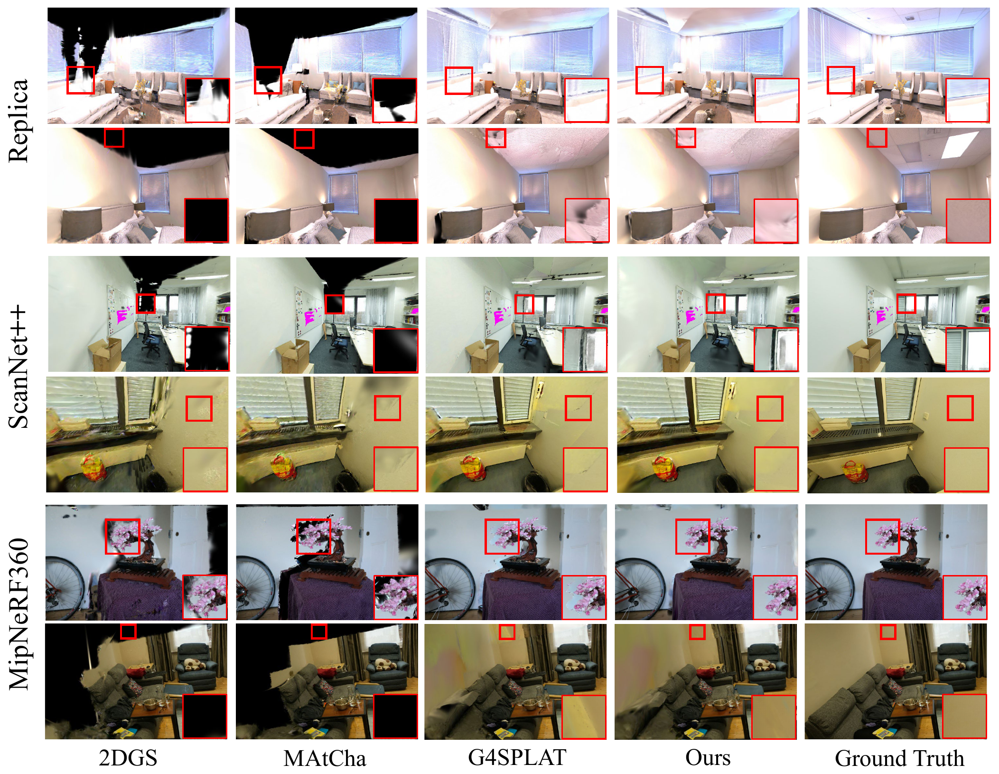

RGGS: Compact Re-Grounded 3D Gaussian Splatting for Sparse-View Indoor Surface Reconstruction
Project Page
1 Hefei University of Technology | 2 South China University of Technology | 3 Nanyang Technological University
RGGS performs geometry-aware fusion of real-view and generative Gaussian fields for sparse-view indoor surface reconstruction.
Abstract
Sparse-view 3D Gaussian Splatting for indoor surface reconstruction is inherently under-constrained, often overfitting the observed views and producing incomplete or unstable geometry in occluded regions. Although existing generative models can provide powerful generative priors to expand visual coverage, directly using generated views as pixel-level supervision often introduces metric drift due to inconsistencies with real observations. In this paper, we present RGGS, a compact Re-Grounded Gaussian Splatting framework that fuses generative priors within the model space while maintaining geometric consistency. Specifically, we first construct two Gaussian fields independently: a base field optimized from real observations and a generative field learned from camera-controlled synthetic views. The two fields are subsequently aligned within a shared coordinate system through a Sim(3) transformation. We then formulate an entropic optimal transport coupling under the Wasserstein-Bures metric to guide field fusion by jointly transporting Gaussian means and anisotropic covariances. The resulting OT-based coupling enables selective transport, distillation, and insertion, effectively integrating reliable generative content while suppressing inconsistent or noisy structures. Finally, we perform a real-view refinement stage that re-projects the fused field onto the manifold induced by real observations, thereby restoring geometric consistency and improving reconstruction accuracy. Extensive experiments on 17 scenes from Replica, ScanNet++, and MipNeRF360 demonstrate that RGGS consistently improves mesh reconstruction quality while achieving competitive novel view synthesis performance. Comprehensive ablation studies further validate the effectiveness of each component.
Key Contributions
- RGGS identifies metric drift as a core failure mode when generative priors are imposed directly as image-space supervision in sparse-view reconstruction.
- It introduces a compact re-grounded Gaussian splatting framework that aligns real-view and generative fields through Sim(3) and fuses them with entropic optimal transport under the Wasserstein-Bures metric.
- It performs OT-guided transport, distillation, and insertion of generative geometry, followed by real-view refinement to improve reconstruction quality while keeping the representation compact.
Video Demo
Mesh Reconstruction on Replica

Mesh Reconstruction on ScanNet++

Novel View Synthesis
